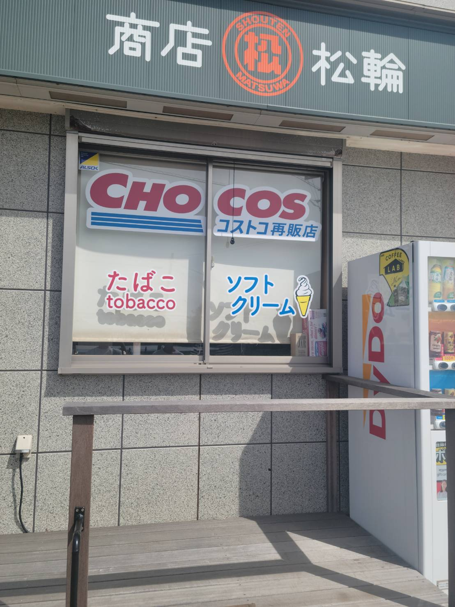
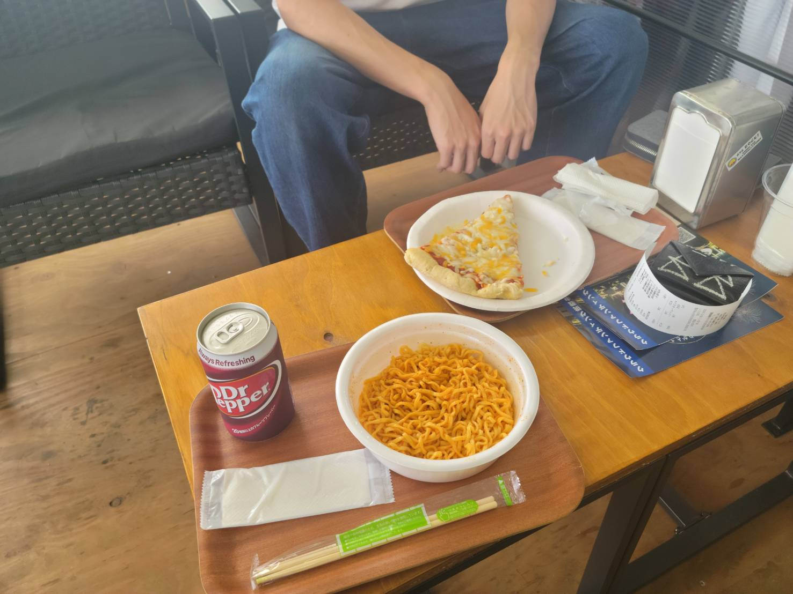

路上観察（10/6）
今日僕が路上観察で見つけたのは「チョコス」です。

この日、僕は友達の田村君と課題の写真探しに横須賀・三浦をうろうろしていたのですが、金田のあたり
を通っている時、最近少し話題になっていた（いや結構前かも）”ChoCos"を発見しました。
前情報がなくあまりよく知らなかったのですが、どうやらチョコスはどうやらコストコの独立した店舗ではなく,
第三者がコストコのビジネス会員として仕入れて販売位している店舗のようです。
気になったので実際に入ってみました。

※店内・店外の写真撮影およびHPへの掲載は直接定員さんから許可を得てます。
店内には、コストコのお馴染みの商品達はもちろん、商店松輪さんのオリジナルの食べ物なども販売していました。
実際に買ってイートインコーナーで食べてみましたがとても美味しかったです。
以上が一周目の課題でした！